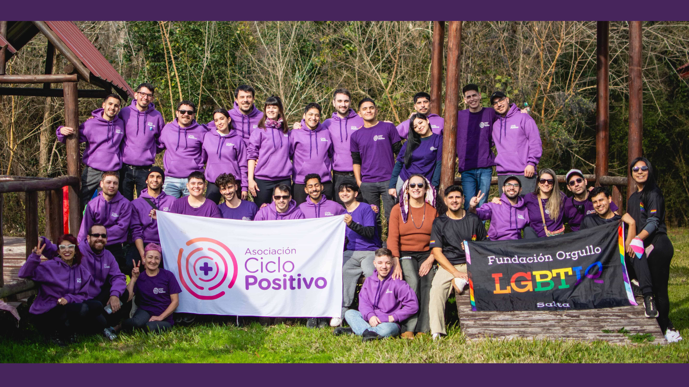
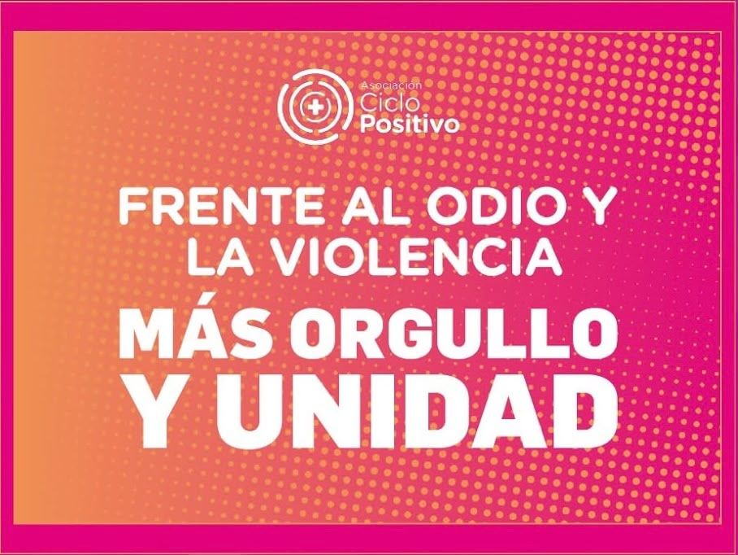
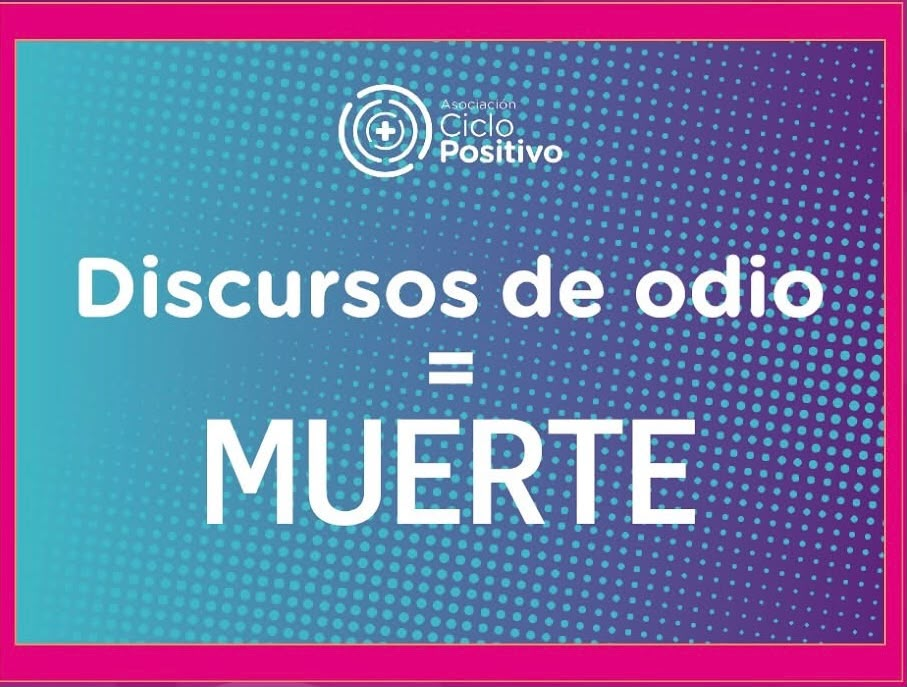
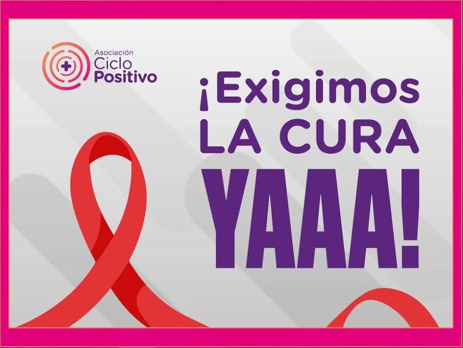
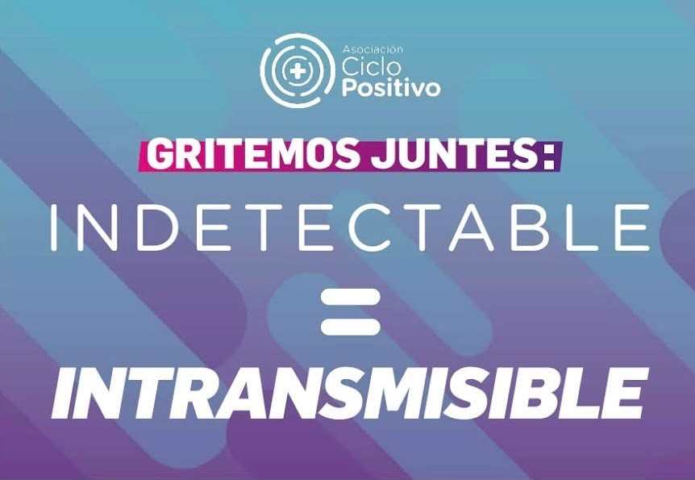
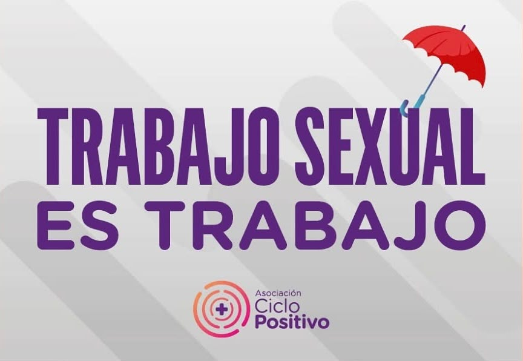
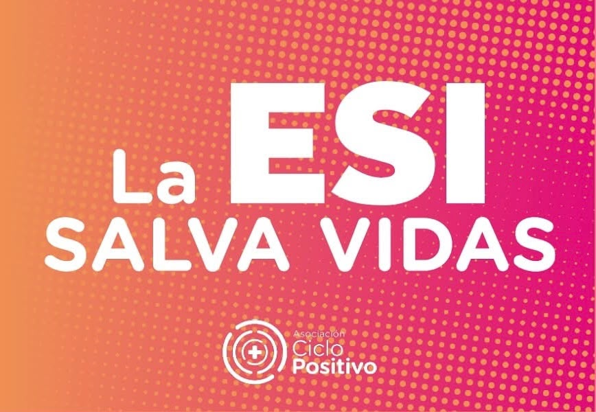
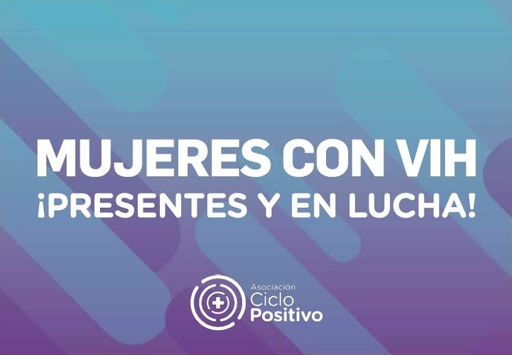
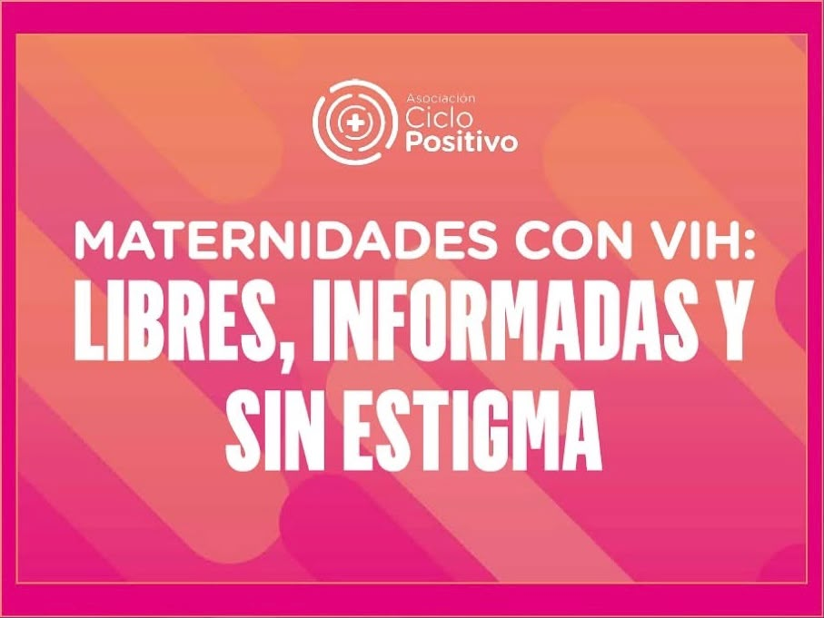
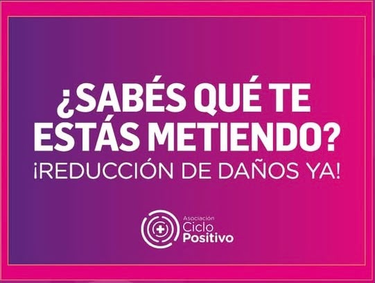

Somos un colectivo de activistas, profesionales y referentes que trabajamos por el acompañamiento integral a poblaciones diversas y en situación de vulnerabilidad.

Somos un colectivo compuesto por activistas, militantes, estudiantes, profesionales de la salud y las ciencias sociales que se reúne para trabajar en pos de la promoción y la protección de los derechos, brindar acompañamiento en asuntos jurídicos, psicosociales y asistencia integral para las poblaciones diversas y en situación de vulnerabilidad.
Desde Asociación Ciclo Positivo afirmamos nuestro compromiso ineludible con la salud pública, con la información científica de calidad, con acciones que construyen equidad.
Pasá el cursor o tocá cada cartel para conocer la consigna que nos mueve.

Frente a los discursos de odio y la violencia, respondemos construyendo comunidad y defendiendo nuestros derechos con orgullo.

Los discursos discriminatorios generan exclusión real y atentan contra la vida y la salud integral de las personas.

Reclamamos inversión estatal en investigación científica para alcanzar una cura definitiva y universal para el VIH.

Quienes viven con VIH y toman su tratamiento con carga viral indetectable no transmiten el virus por vía sexual.

Acompañamos y defendemos los derechos laborales, el reconocimiento y la protección social.

Herramienta fundamental para prevenir violencias, promover la salud y construir juventudes libres.

Visibilizamos las vivencias, la autonomía y el liderazgo histórico de las mujeres en la resistencia.

Derecho pleno a decidir sobre nuestros cuerpos, gestar y maternar con información y sin estigmas.

Abordaje pragmático frente al consumo, priorizando el cuidado, la información y el acompañamiento.
Desde hace dos años, los aportes individuales de personas como vos son nuestra única fuente de financiamiento. Y eso hace que cada suscripción, literalmente, nos permita seguir.
Con tu aporte acompañamos a personas frente a un diagnóstico o una vulneración de derechos, sostenemos grupos de encuentro, producimos información sobre VIH y salud, formamos activistas, hacemos campañas, impulsamos cambios en políticas públicas y construimos un Ciclo cada vez más federal.
No buscamos que pocas personas aporten mucho. Queremos que muchas podamos aportar un poquito.
Si podés acompañarnos, la suscripción es de $300 por día.
Gracias por estar ahí, por confiar y por ofrecer tu parte.
Equipo de Asociación Ciclo Positivo
El grupo de encuentro es un espacio para compartir, escucharnos y acompañarnos, desde una mirada de salud integral comunitaria.
Los grupos están abiertos a personas con y sin VIH que quieran encontrarse, hacer preguntas, intercambiar experiencias y construir redes de apoyo.
📍 CABA: Todos los viernes de 17:30 a 19:00 hs
📍 Ushuaia: Un sábado por mes de 18 a 20 hs
💜 Si vivís en Córdoba o Mendoza, anotate para recibir novedades sobre próximos grupos en tu ciudad.
Abrimos las puertas de nuestra sede en CABA para encontrarnos también desde la danza y la cultura popular.
Se vienen las clases de Folclore en Ciclo Positivo, coordinadas por el profe David Ceballos Tulian: un espacio para aprender, bailar, divertirnos y compartir.
Creemos en la cultura como un espacio de encuentro, expresión y construcción colectiva. Por eso, queremos bailar nuestras danzas populares desde la diversidad, cuestionando los roles tradicionales de género y construyendo un espacio donde cada persona pueda expresarse y disfrutar con libertad. 🏳️🌈
🗓️ Miércoles de 17.30 a 19 h
📍 Sede de Ciclo Positivo — CABA
💃 Actividad libre y gratuita
✨ No necesitás experiencia previa. Si tenés ganas de bailar, divertirte y compartir, este espacio es para vos.
Hacé clic en cada categoría para explorar la información clave basada en evidencia.
El VIH (Virus de Inmunodeficiencia Humana) es un virus que ataca al sistema inmunológico, específicamente a los glóbulos blancos (células CD4), encargados de defender al organismo de las infecciones.
Con el tratamiento adecuado y oportuno, el virus se mantiene controlado, permitiendo que el sistema inmunitario se mantenga fuerte y garantizando una expectativa y calidad de vida plena y saludable.
Las Infecciones de Transmisión Sexual (ITS) son infecciones que se transmiten principalmente a través de las relaciones sexuales sin protección. Muchas de ellas pueden no presentar síntomas durante mucho tiempo, por lo que el testeo periódico es fundamental.
El diagnóstico temprano permite acceder a tratamientos oportunos y eficaces, previniendo complicaciones y cuidando nuestra salud sexual de manera integral.
Trabajamos activamente por la inclusión, el respeto y la garantía de derechos integrales para las personas travestis, transexuales y transgénero.
El acceso a la salud integral, el respeto al trato digno y la Ley de Identidad de Género son pilares fundamentales para construir una sociedad justa y libre de violencias. Brindamos asesoramiento, contención y redes comunitarias de apoyo.
La Educación Sexual Integral (ESI) articula aspectos biológicos, psicológicos, sociales, afectivos y éticos. Es una herramienta clave para la promoción de la salud, el ejercicio de derechos y la prevención de la violencia.
Promovemos la ESI como un derecho fundamental en todos los ámbitos de la sociedad, fomentando el respeto por la diversidad y la construcción de vínculos saludables y libres de prejuicios.
Un espacio de formación pensado para quienes en Argentina quieren defender el derecho a la salud, acompañar situaciones de vulneración de derechos y desarrollar herramientas para incidir en políticas públicas.
📚 Contenidos abordados durante los 6 encuentros:
Construyendo redes y acompañamiento todos los días.
Podés ver más imágenes y contenido diario en nuestro perfil de Instagram.